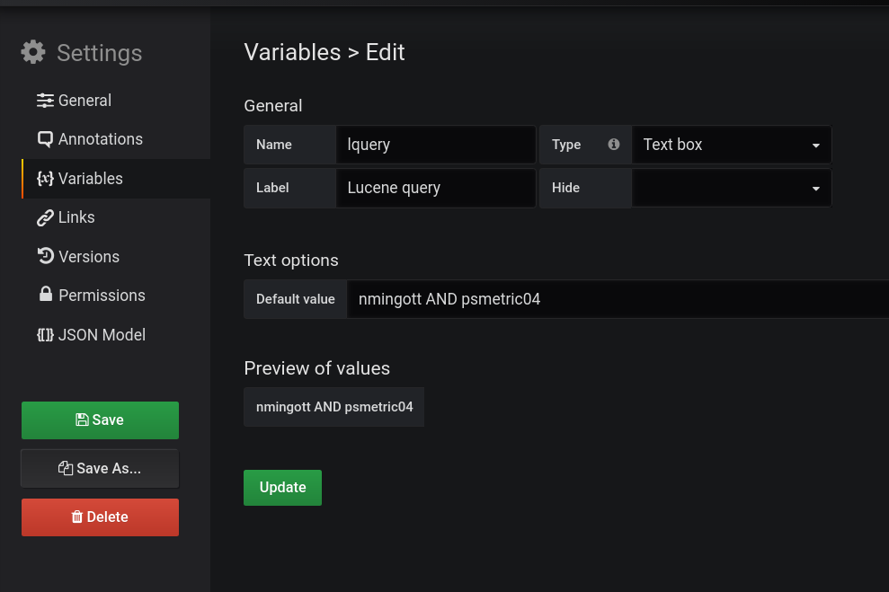

Grafana plugin to search log lines into Elasticsearch. [code on GitHub]
At SLAC we moved recently many server log files under Elasticsearch. It is now very easy and fast to do a text search into all log files from the shell (using elastico) or from Kibana. Since our system analysts use often Grafana to keep an eye on the performance of many machines it was considered practical to the to be able to query also Elasticsearch lslslogs index from Grafana. Then, elasticall was born.
Being this software GUI based we will show a bit of how it works via videos. It is seems the most practical way to do it.
VIDEO ERRATA.
The plugin has been tested in Grafana 5.4.0 and Elasticsearch 6.5.1 running under Linux.
When you use the plugin your Web browser calls Grafana but it needs to call directly also Elasticsearch. This may change in future, it is a first release simplification.
Consequences: (-) Elasticsearch must be reachable by your browser. (-) CORS must be enabled into Elasticsearch,
elasticsearch.yml restart Elasticsearch server.
ElastiGraf-master under Grafana data/plugins directory.
elastigraf-panel-master.
The template variable permits to change the Lucene query rapidly. When the template variable is defined it overrides the value of the option Edit -> Option -> Default query.
The template variable is not required to use the plugin but highly recommended if frequent changes to the Lucene query are expected.
You can set a template variable in a Dashboard clicking the icon Settings, the gear icon on the top right, and then pressing the Variable label on the left. Follow the configuration shown in the picture below, in Default value you can set what you prefer.
